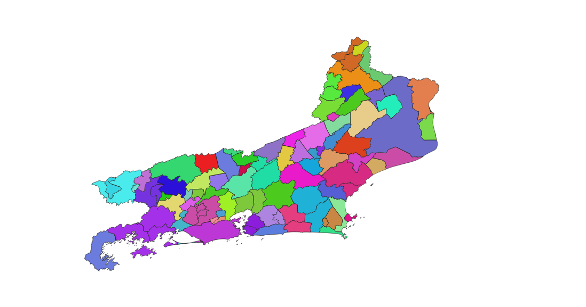

Batalha das Cidades - Rio de Janeiro
Município
Selecione a cidade e veja o status atual dela:
Pontos de vida
0
Força
0
Habilidade
0
Resistência
0
Armadura
0
Poder de fogo
0
Império
Próprio
Territórios conquistados
×

Histórico de rodadas
Resultado da rodada #13 (Macaé x Rio das Ostras)
Rio das Ostras perdeu 2 pontos de vida e ficou com 18.
Macaé não sofreu dano.
Rio das Ostras perdeu 2 pontos de vida e ficou com 16.
Macaé não sofreu dano.
Rio das Ostras perdeu 3 pontos de vida e ficou com 13.
Macaé não sofreu dano.
Rio das Ostras perdeu 3 pontos de vida e ficou com 10.
Macaé não sofreu dano.
Rio das Ostras perdeu 4 pontos de vida e ficou com 6.
Macaé não sofreu dano.
Rio das Ostras perdeu 3 pontos de vida e ficou com 3.
Macaé não sofreu dano.
Rio das Ostras perdeu 4 pontos de vida e ficou com -1.
Rio das Ostras foi derrotado e conquistado por Macaé
Resultado da rodada #12 (São Pedro da Aldeia x Iguaba Grande)
Iguaba Grande perdeu 4 pontos de vida e ficou com 16.
São Pedro da Aldeia não sofreu dano.
Iguaba Grande perdeu 2 pontos de vida e ficou com 14.
São Pedro da Aldeia não sofreu dano.
Iguaba Grande perdeu 3 pontos de vida e ficou com 11.
São Pedro da Aldeia não sofreu dano.
Iguaba Grande perdeu 1 pontos de vida e ficou com 10.
São Pedro da Aldeia não sofreu dano.
Iguaba Grande perdeu 4 pontos de vida e ficou com 6.
São Pedro da Aldeia não sofreu dano.
Iguaba Grande perdeu 3 pontos de vida e ficou com 3.
São Pedro da Aldeia não sofreu dano.
Iguaba Grande perdeu 4 pontos de vida e ficou com -1.
Iguaba Grande foi derrotado e conquistado por São Pedro da Aldeia
Resultado da rodada #11 (Silva Jardim x Araruama)
Araruama perdeu 5 pontos de vida e ficou com 5.
Silva Jardim perdeu 2 pontos de vida e ficou com 8.
Araruama perdeu 1 pontos de vida e ficou com 4.
Silva Jardim perdeu 1 pontos de vida e ficou com 7.
Araruama perdeu 2 pontos de vida e ficou com 2.
Silva Jardim perdeu 2 pontos de vida e ficou com 5.
Araruama perdeu 4 pontos de vida e ficou com -2.
Araruama foi derrotado e conquistado por Silva Jardim
Resultado da rodada #10 (Itaboraí x Tanguá)
Tanguá perdeu 5 pontos de vida e ficou com 15.
Itaboraí não sofreu dano.
Tanguá perdeu 3 pontos de vida e ficou com 12.
Itaboraí não sofreu dano.
Tanguá perdeu 1 pontos de vida e ficou com 11.
Itaboraí não sofreu dano.
Tanguá perdeu 5 pontos de vida e ficou com 6.
Itaboraí não sofreu dano.
Tanguá perdeu 1 pontos de vida e ficou com 5.
Itaboraí não sofreu dano.
Tanguá perdeu 2 pontos de vida e ficou com 3.
Itaboraí não sofreu dano.
Tanguá perdeu 3 pontos de vida e ficou com 0.
Tanguá foi derrotado e conquistado por Itaboraí
Resultado da rodada #9 (Rio Claro x Mangaratiba)
Mangaratiba perdeu 2 pontos de vida e ficou com 8.
Rio Claro perdeu 4 pontos de vida e ficou com 6.
Mangaratiba perdeu 2 pontos de vida e ficou com 6.
Rio Claro perdeu 3 pontos de vida e ficou com 3.
Mangaratiba perdeu 1 pontos de vida e ficou com 5.
Rio Claro perdeu 2 pontos de vida e ficou com 1.
Mangaratiba perdeu 3 pontos de vida e ficou com 2.
Rio Claro perdeu 3 pontos de vida e ficou com -2.
Rio Claro foi derrotado e conquistado por Mangaratiba
Resultado da rodada #8 (Miracema x Laje do Muriaé)
Laje do Muriaé perdeu 2 pontos de vida e ficou com 8.
Miracema perdeu 2 pontos de vida e ficou com 8.
Laje do Muriaé perdeu 1 pontos de vida e ficou com 7.
Miracema não sofreu dano.
Laje do Muriaé perdeu 3 pontos de vida e ficou com 4.
Miracema perdeu 1 pontos de vida e ficou com 7.
Laje do Muriaé perdeu 1 pontos de vida e ficou com 3.
Miracema perdeu 2 pontos de vida e ficou com 5.
Laje do Muriaé perdeu 1 pontos de vida e ficou com 2.
Miracema perdeu 4 pontos de vida e ficou com 1.
Laje do Muriaé perdeu 2 pontos de vida e ficou com 0.
Laje do Muriaé foi derrotado e conquistado por Miracema.
Resultado da rodada #7 (Japeri x Queimados)
Queimados não sofreu dano.
Japeri não sofreu dano.
Queimados não sofreu dano.
Japeri não sofreu dano.
Queimados não sofreu dano.
Japeri perdeu 1 pontos de vida e ficou com 19.
Queimados não sofreu dano.
Japeri perdeu 1 pontos de vida e ficou com 18.
Queimados não sofreu dano.
Japeri não sofreu dano.
Queimados não sofreu dano.
Japeri não sofreu dano.
Queimados não sofreu dano.
Japeri perdeu 2 pontos de vida e ficou com 16.
Queimados não sofreu dano.
Japeri não sofreu dano.
Queimados não sofreu dano.
Japeri perdeu 3 pontos de vida e ficou com 13.
Queimados não sofreu dano.
Japeri perdeu 2 pontos de vida e ficou com 11.
Queimados não sofreu dano.
Japeri não sofreu dano.
Queimados não sofreu dano.
Japeri perdeu 1 pontos de vida e ficou com 10.
Queimados não sofreu dano.
Japeri não sofreu dano.
Queimados não sofreu dano.
Japeri perdeu 3 pontos de vida e ficou com 7.
Queimados não sofreu dano.
Japeri perdeu 1 pontos de vida e ficou com 6.
Queimados não sofreu dano.
Japeri perdeu 1 pontos de vida e ficou com 5.
Queimados não sofreu dano.
Japeri perdeu 2 pontos de vida e ficou com 3.
Queimados não sofreu dano.
Japeri perdeu 2 pontos de vida e ficou com 1.
Queimados não sofreu dano.
Japeri perdeu 1 pontos de vida e ficou com 0.
Japeri foi derrotado e conquistado por Queimados.
Resultado da rodada #6 (Saquarema x Rio Bonito)
Rio Bonito perdeu 2 pontos de vida e ficou com 8.
Saquarema perdeu 2 pontos de vida e ficou com 10.
Rio Bonito perdeu 1 pontos de vida e ficou com 7.
Saquarema não sofreu dano.
Rio Bonito perdeu 2 pontos de vida e ficou com 5.
Saquarema não sofreu dano.
Rio Bonito perdeu 1 pontos de vida e ficou com 4.
Saquarema não sofreu dano.
Rio Bonito perdeu 3 pontos de vida e ficou com 1.
Saquarema não sofreu dano.
Rio Bonito perdeu 2 pontos de vida e ficou com -1.
Rio Bonito foi derrotado e conquistado por Saquarema.
Resultado da rodada #5 (Volta Redonda x Barra Mansa)
Barra Mansa perdeu 2 pontos de vida e ficou com 8.
Volta Redonda perdeu 1 pontos de vida e ficou com 11.
Barra Mansa perdeu 3 pontos de vida e ficou com 5.
Volta Redonda não sofreu dano.
Barra Mansa perdeu 4 pontos de vida e ficou com 1.
Volta Redonda não sofreu dano.
Barra Mansa perdeu 5 pontos de vida e ficou com -4.
Barra Mansa foi derrotado e conquistado por Volta Redonda.
Resultado da rodada #4 (São Gonçalo x Niterói)
Niterói não sofreu dano.
São Gonçalo perdeu 1 pontos de vida e ficou com 19.
Niterói não sofreu dano.
São Gonçalo não sofreu dano.
Niterói perdeu 1 pontos de vida e ficou com 19.
São Gonçalo perdeu 2 pontos de vida e ficou com 17.
Niterói perdeu 2 pontos de vida e ficou com 17.
São Gonçalo não sofreu dano.
Niterói perdeu 1 pontos de vida e ficou com 16.
São Gonçalo não sofreu dano.
Niterói perdeu 1 pontos de vida e ficou com 15.
São Gonçalo perdeu 2 pontos de vida e ficou com 15.
Niterói perdeu 1 pontos de vida e ficou com 14.
São Gonçalo não sofreu dano.
Niterói perdeu 1 pontos de vida e ficou com 13.
São Gonçalo perdeu 1 pontos de vida e ficou com 14.
Niterói perdeu 1 pontos de vida e ficou com 12.
São Gonçalo perdeu 3 pontos de vida e ficou com 11.
Niterói perdeu 2 pontos de vida e ficou com 10.
São Gonçalo perdeu 1 pontos de vida e ficou com 10.
Niterói perdeu 2 pontos de vida e ficou com 8.
São Gonçalo não sofreu dano.
Niterói perdeu 3 pontos de vida e ficou com 5.
São Gonçalo perdeu 2 pontos de vida e ficou com 8.
Niterói não sofreu dano.
São Gonçalo não sofreu dano.
Niterói não sofreu dano.
São Gonçalo perdeu 1 pontos de vida e ficou com 7.
Niterói não sofreu dano.
São Gonçalo perdeu 2 pontos de vida e ficou com 5.
Niterói não sofreu dano.
São Gonçalo perdeu 3 pontos de vida e ficou com 2.
Niterói perdeu 1 pontos de vida e ficou com 4.
São Gonçalo perdeu 1 pontos de vida e ficou com 1.
Niterói perdeu 1 pontos de vida e ficou com 3.
São Gonçalo perdeu 2 pontos de vida e ficou com -1.
São Gonçalo foi derrotado e conquistado por Niterói.
Resultado da rodada #3 (Teresópolis x São José do Vale do Rio Preto)
São José do Vale do Rio Preto não sofreu dano.
Teresópolis não sofreu dano.
São José do Vale do Rio Preto perdeu 3 pontos de vida e ficou com 7.
Teresópolis não sofreu dano.
São José do Vale do Rio Preto perdeu 2 pontos de vida e ficou com 5.
Teresópolis não sofreu dano.
São José do Vale do Rio Preto perdeu 3 pontos de vida e ficou com 2.
Teresópolis não sofreu dano.
São José do Vale do Rio Preto perdeu 1 pontos de vida e ficou com 1.
Teresópolis perdeu 1 pontos de vida e ficou com 9.
São José do Vale do Rio Preto perdeu 1 pontos de vida e ficou com 0.
São José do Vale do Rio Preto foi derrotado e conquistado por Teresópolis.
Resultado da rodada #2 (Natividade x Porciúncula)
Porciúncula perdeu 3 pontos de vida e ficou com 7.
Natividade perdeu 3 pontos de vida e ficou com 7.
Porciúncula perdeu 1 pontos de vida e ficou com 6.
Natividade perdeu 3 pontos de vida e ficou com 4.
Porciúncula perdeu 1 pontos de vida e ficou com 5.
Natividade perdeu 3 pontos de vida e ficou com 1.
Porciúncula perdeu 1 pontos de vida e ficou com 4.
Natividade perdeu 3 pontos de vida e ficou com -2.
Natividade foi derrotado e conquistado por Porciúncula.
Resultado da rodada #1 (Mesquita x Nilópolis)
Nilópolis perdeu 3 pontos de vida e ficou com 17.
Mesquita não sofreu dano.
Nilópolis perdeu 3 pontos de vida e ficou com 14.
Mesquita não sofreu dano.
Nilópolis perdeu 4 pontos de vida e ficou com 10.
Mesquita não sofreu dano.
Nilópolis perdeu 3 pontos de vida e ficou com 7.
Mesquita não sofreu dano.
Nilópolis perdeu 3 pontos de vida e ficou com 4.
Mesquita não sofreu dano.
Nilópolis perdeu 4 pontos de vida e ficou com 0.
Nilópolis foi derrotado e conquistado por Mesquita.